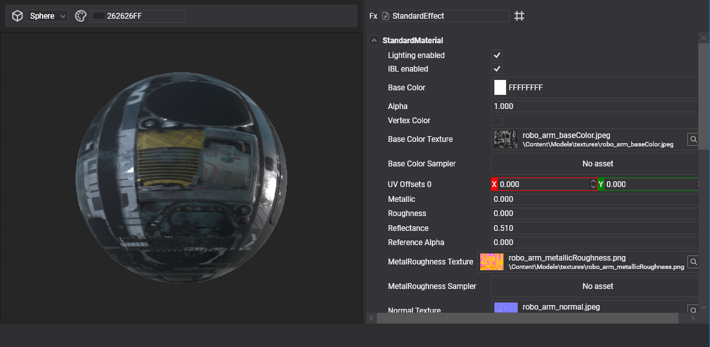
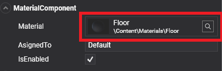
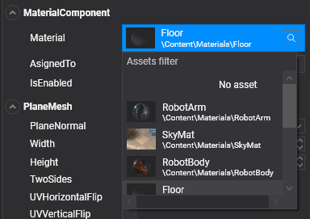

Use Assets

Once an asset is in the project, you can use it in three ways: reference it from a component, reference it from another asset, or load it from code. References made in Evergine Studio are stored as asset IDs, so renaming or moving an asset does not break them.
Reference an asset from a component
Many components expose asset properties. For example, MaterialComponent references a Material, Billboard references a Texture, and Animation3D references a Model. When a scene is loaded, every asset referenced by its components is loaded with it.
In the Entity Details panel, an asset property is shown as an asset selection control with the thumbnail, name and path of the current asset.

Click the control to open the asset picker:

- Type in Assets filter to narrow the list, which helps in large projects.
- Click an asset to assign it to the property.
- Select No asset (the first entry) to clear the reference.
- Click the lens icon to select the current asset in the Assets Details panel, so you can find and edit it.
Note
The picker only lists assets of the type the property expects. A Texture property only offers textures.
Reference an asset from another asset
Assets can reference other assets in the same way. A Material references Textures and Samplers, and a Texture references the Sampler it uses by default. The asset editors show the same selection control as the Entity Details panel.
Load assets from code
At runtime you load assets through one of two objects, depending on how long the asset must live:
| Object | Scope | Who unloads the asset |
|---|---|---|
AssetsService |
Application. Use it for assets shared by several scenes. | You, by calling Unload. |
AssetSceneManager |
One scene. Use it for assets that belong to that scene. | The scene, when it is disposed. |
Both identify an asset by the ID that Evergine generates in the EvergineContent class. Each folder of the Content directory becomes a nested class, and each asset becomes a Guid field named after its file, so Content/Textures/Logo.png is EvergineContent.Textures.Logo_png.
AssetSceneManager
AssetSceneManager is a scene manager that every scene registers by default. Components reach it through this.Managers.AssetSceneManager. Assets loaded here are released when the scene is disposed, for example when you navigate to another scene, so you do not have to track them.
using Evergine.Common.Graphics;
using Evergine.Components.Graphics3D;
using Evergine.Framework;
namespace MyProject.Components
{
public class LogoLoader : Component
{
[BindComponent]
private Billboard billboard = null;
protected override void OnActivated()
{
base.OnActivated();
// The scene owns this texture and unloads it together with the scene.
this.billboard.Texture = this.Managers.AssetSceneManager.Load<Texture>(EvergineContent.Textures.Logo_png);
}
}
}
AssetsService
AssetsService is an application service that manages every asset loaded in the application. The project template registers it in MyApplication. Resolve it from the container, and unload each asset when you no longer need it.
var assetsService = Application.Current.Container.Resolve<AssetsService>();
// Load by ID. The same instance is returned to every caller until it is unloaded.
Texture logo = assetsService.Load<Texture>(EvergineContent.Textures.Logo_png);
// ...
// Unload by ID when no one uses the texture any more.
assetsService.Unload(EvergineContent.Textures.Logo_png);
AssetsService and AssetSceneManager share the same loading methods:
| Method | Description |
|---|---|
Load<T>(Guid id, bool forceNewInstance = false) |
Loads the asset with the given ID. This is the usual way to load an asset. |
Load<T>(string path, bool forceNewInstance = false) |
Loads a file from the application content directory by its path. |
Load<T>(string name, Stream stream, bool forceNewInstance = false) |
Loads an asset from a stream. name identifies the asset in the cache, and its extension selects the importer. |
Unload(Guid id) / Unload(string path) |
Releases an asset loaded by ID or by path. |
LoadRaw<T>(Guid id, Func<Stream, T> loader) |
Reads a raw asset with your own loader (see below). |
Load an asset from a stream
Load<T>(name, stream) is useful for content that is not known at build time, such as an image downloaded by the application. The extension of name decides how the stream is read, so a .png name uses the PNG importer.
using (var stream = File.OpenRead(downloadedFilePath))
{
Texture photo = assetsService.Load<Texture>("photo.png", stream);
}
Note
Importing source formats such as .png or .gltf at runtime requires the Evergine.Assets assembly in the application. It is slower and uses more memory than loading exported assets, so prefer assets exported by Evergine Studio whenever the content is known in advance. See Export Assets.
Force a new instance
By default, loading an asset that is already loaded returns the existing instance. This saves memory and loading time, but a change made to that instance is visible everywhere it is used. Pass forceNewInstance: true when you need an independent copy, for example a material you want to modify for a single entity.
// Shared instance: every caller gets the same material.
Material sharedMaterial = assetSceneManager.Load<Material>(EvergineContent.Materials.Floor);
// Independent copy: changes to it do not affect sharedMaterial.
Material uniqueMaterial = assetSceneManager.Load<Material>(EvergineContent.Materials.Floor, forceNewInstance: true);
Load raw assets
A raw asset is a file that Evergine copies to the application output without converting it. Mark an asset as raw with Set to export as raw in its context menu (see Edit Assets). Raw assets keep their EvergineContent ID.
Evergine does not know how to interpret a raw file, so you load it with LoadRaw<T> and a loader function that reads the stream and returns any type you need. A text file, for example:
var assetsService = Application.Current.Container.Resolve<AssetsService>();
string text = assetsService.LoadRaw(
EvergineContent.Data.Notes_txt,
stream =>
{
using var reader = new StreamReader(stream);
return reader.ReadToEnd();
});
The same method can deserialize a JSON file:
MyConfiguration configuration = assetsService.LoadRaw(
EvergineContent.Data.Configuration_json,
stream => JsonSerializer.Deserialize<MyConfiguration>(stream));
AssetSceneManager.LoadRaw<T> behaves exactly the same way.
Important
Raw assets are not cached. Every call to LoadRaw<T> opens the file and runs the loader again. If you reuse the result, keep it yourself and decide when to release it.
Note
Evergine owns the Stream passed to the loader and closes it when the loader returns. Read what you need inside the loader and return the result, never the stream. Raw assets are not tracked by the asset cache, so there is nothing to Unload.
LoadRaw<T> throws an ArgumentException if the ID belongs to a regular asset. Use Load<T> for those.